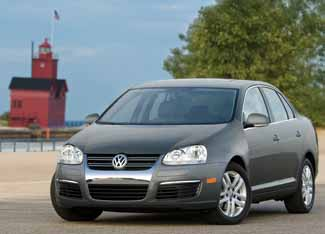

The U.S. Department of Energy and the Environmental Protection Agency unveiled the 2009 Fuel Economy Guide last week, providing consumers with detailed information about the fuel economy, carbon footprint, and air pollution score for model year 2009 vehicles, as well as information about gasoline-electric hybrid cars, alternative fuel vehicles, electric vehicles and fuel cell vehicles.
For mainstream vehicles, the Toyota Prius continues to lead the pack in terms of gas mileage (48/45 mpg), sharing the top 10 list with six other hybrids, including the three incarnations of the Ford Escape hybrid that occupy fourth place (the Mazda Tribute and Mercury Mariner being the variants). The Smart Fortwo convertible and coupe took fifth place (33/41 mpg), joining the Toyota Yaris (29/35 mpg) as the top-ranking small cars. In addition, the manual and automatic versions of the diesel Volkswagen Jetta and Jetta Sportwagen landed in seventh and eighth place (30/41 and 29/40, respectively), marking the debut of clean diesel vehicles on the top 10 list.
And for the first time, the Fuel Economy Guide is available in a version for mobile phones, allowing people to easily check the fuel economy, estimated annual fuel cost and carbon footprint of cars as they shop.
The EPA has also updated its Green Vehicle Guide, which provides information about the fuel economy, air pollution emissions and greenhouse gas emissions for specific models and configurations of vehicles. Because some versions of vehicles are only available in certain states, the Green Vehicle Guide allows consumers to search by state. For the first time, clean diesel vehicles such as the Volkswagen Jetta can be found in the listing for California and other states that have adopted California's tough emissions standards. These "50-state" clean diesels also include three 2009 model year vehicles from Mercedes-Benz: the GL 320 BlueTEC, the ML 320 BlueTEC, and the R 320 BlueTEC.
Because these are the first clean diesel vehicles offered in the United States, meeting the federal requirements for "advanced lean-burn-technology motor vehicles," they qualify for federal tax credits ranging from $900 to $1,800.
|
 VOLKSWAGEN The 2009 Volkswagen Jetta is one of several new "clean diesel" vehicles with excellent fuel economy (29 mpg in city driving and 40 mpg on the highway) and much-improved emissions. |
|
|